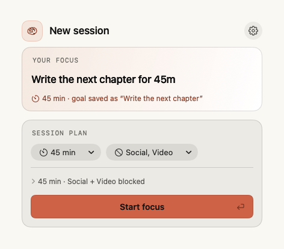
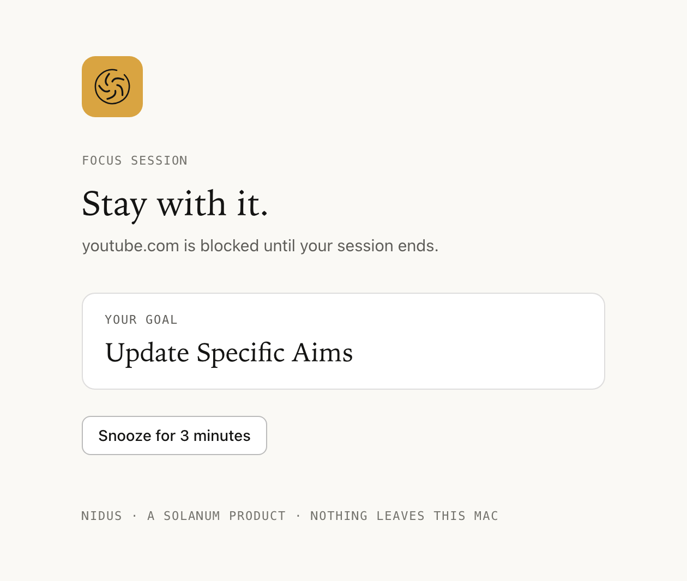
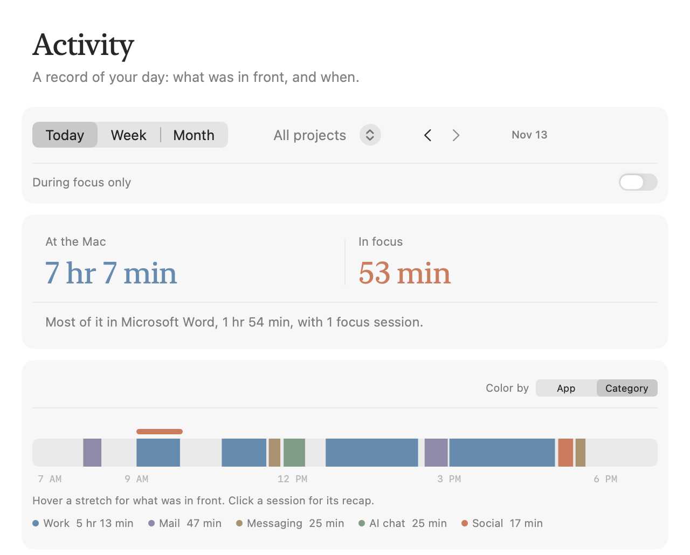
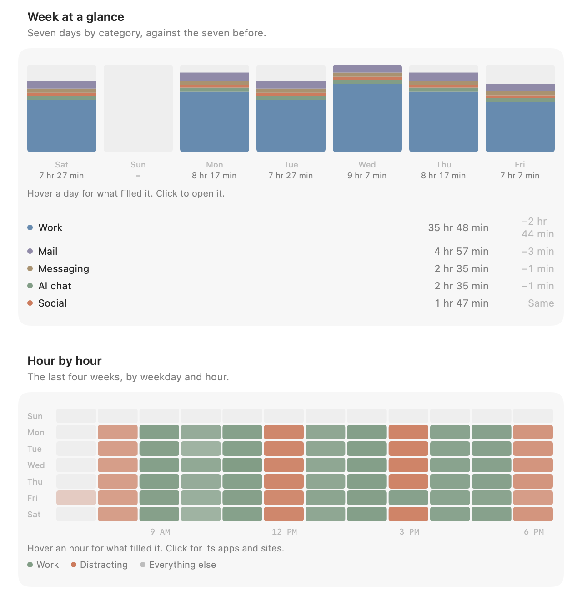
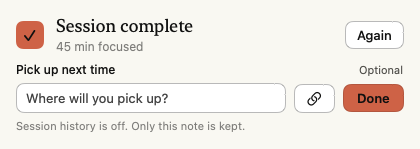

See the plan before you begin.
Your session preview brings the length, blocked categories and break together before Start. Open its details to check the rest. Choose a length from the menu and a duration in your goal follows along.

 SOLANUM
SOLANUM
Blocked apps quit the moment they open. Blocked websites are replaced with a quiet page that reminds you what you're working on. And all day, focused or not, Nidus keeps track of where your time actually goes.
curl -fsSL https://raw.githubusercontent.com/samporter14/nidus/main/install.sh | zsh
Say what you are working on, choose a length and what to block, and press Start. Underneath, Today shows your time at the Mac and in focus, and your top apps, websites and documents.
They're asked to quit the normal way, so anything unsaved gets its usual prompt. Settings can hide them instead.
It tells you how long you focused and how many times you were blocked, and asks whether you finished.
No snooze or pause during a session, and ending one early means typing “stop early” in the popover. Nidus won't quit during a strict session, and comes back within seconds if it's killed.
At rest it is a virus particle. When a session starts it becomes a brain, and fills as the session runs.
Pause or add five minutes from the popover. Snooze one app or site for a few minutes from its card or the block page.
Websites are blocked in Safari, Chrome, Brave, Chromium and Opera Air, and every tab goes back to where it was when the session ends. Firefox, Arc, Edge and other browsers Nidus can't watch can be blocked as a whole app until the session ends.
No account, no analytics, no server: Nidus never connects to the internet. Its records, Activity included, stay in files on your Mac, and Settings can turn them off or clear them. Read the privacy details.
Nidus records which app, website or document was in front, and when, all day, not only during sessions. Then it draws the day back for you.


Today opens on a ribbon of your day, colored by category, with your focus sessions above it. Short interruptions fold into what they interrupted; hover a block to see what's inside.
One ranked list by day, week or month. Documents are real files, plus Google Docs and Office on the web. Websites group by host. Click a row to open it again, or an app to see its sites and files.
A bar per day for the last seven days, each category against the week before. A weekday-by-hour grid shows when Work happens and when distraction does. Click a day or an hour to open it.
What pulled you away: three minutes or more on something, then three minutes or more on a distraction straight after, with how often it happened and the time it cost.
Put the apps and sites you work in under Work: it counts time and is never blocked. Right-click any row to count it as Work, a category or Uncategorized, without changing what gets blocked.
Time stops at your last input after five minutes away, and a session counts only itself. During focus, reading in silence still counts. Days are kept for 90 days by default, and export as CSV.
Nidus Today shows the day's Work, distracting and other time, with a small ribbon in the medium size. Another widget shows your goal and time left, or setups to start.
Get Today's Activity and How Much Work Today join the focus actions in Shortcuts. Start Nidus and End Nidus Session can sit in Control Center.
Add Nidus as a Focus filter in System Settings and pick a setup: turning that Focus on starts it, and turning it off ends it, unless it's strict.
App previews use fictional example data. Read what's new in Nidus 0.6.
nidus, n. Latin, nest. A breeding place; in particular, the place in a host where an organism lodges and multiplies.
Your session preview brings the length, blocked categories and break together before Start. Open its details to check the rest. Choose a length from the menu and a duration in your goal follows along.

After at least a minute of focused time, leave an optional note about where to pick up next—even for an unnamed session. The finish card and shared buttons keep the same quiet Solanum style.

App previews use fictional example data. Read the Nidus 0.4.4 release notes.